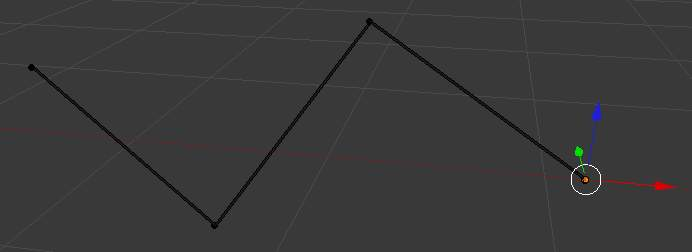
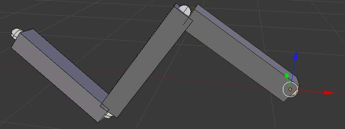

Armature visualization¶
We have four basic bone visualization: Octahedral, Stick, B-Bone, Envelope and Wire:

Octahedral bone display. |

Stick bone display. |

B-Bone bone display. |

Envelope bone display. |
{kind=link}
{kind=link}
Display Panel¶
参考
But let us first see some general visualization properties of armatures, found in the Display panel of the Object data tab.

The Display panel.
Bone Types¶
- Octahedral bone
This is the default visualization, well suited for most of editing tasks. It materializes:
- The bone root (“big” end) and tip (“small” end).
- The bone “size” (its thickness is proportional to its length).
- The bone roll (as it has a square section).
- Stick bone
This is the simplest and most non-intrusive visualization. It just materializes bones by sticks of constant (and small) thickness, so it gives you no information about root and tip, nor bone size or roll angle.
- B-Bone bone
This visualization shows the curves of “smooth” multi-segmented bones; see the bone page for details.
- Envelope bone
This visualization materializes the bone deformation influence. More on this in the bone page.
{kind=link}
{kind=link}
{kind=link}
{kind=link}
Draw Options¶
- Names
- When enabled, the name of each bone is drawn.
- Colors
- This is only relevant for 姿态模式, and is described in detail there.
- Axes
- When enabled, the (local) axes of each bone are drawn (only relevant for 编辑模式 and 姿态模式).
- X-Ray
- When enabled, the bones of the armature will always be drawn on top of the solid objects (meshes, surfaces, ...) - i.e. they will always be visible and selectable (this is the same option as the one found in the Display panel of the Object data tab. Very useful when not in Wireframe mode.
- Shapes
- When enabled, the default standard bone shape is replaced, in 物体模式 and 姿态模式, by the shape of a chosen object (see Shaped Bones for details).
- Delay Refresh
- When enabled, the bone doesn’t deform its children when manipulating the bone in pose mode.
Shaped Bones¶
参考
Blender allows you to give to each bone of an armature a specific shape (in 物体模式 and 姿态模式), using another object as “template”. First of all, you have to enable the Shapes button (Armature panel).

The Display panel.
Attributes¶
- Wireframe
- When enabled, bone is displayed in wireframe mode regardless of the viewport drawing mode. Useful for non-obstructive custom bone chains.
- Hide
- Bone is not visible when not in 编辑模式.
- Custom Shape
- Object that defines the custom shape of the selected bone.
- Custom At
- Bone that defines the display transform of this shape bone
To assign a custom shape to a bone, you have to:
- Switch to 姿态模式
Ctrl-Tab. - Select the relevant bone by clicking on it with
RMB. - Go to the Display panel Custom Shape field and select the 3D object previously created in the scene; in this example we are using a cube and a cone. Tou can optionally set the At field to another bone.
{kind=link}
{kind=link}
{kind=link}
Note
- These shapes will never be rendered - like any bone, they are only visible in 3D视图s.
- Even if any type of object seems to be accepted by the OB field (meshes, curves, even metas...), only meshes really work - all other types just make the bone invisible; nothing is drawn...
- The center of the shape object will be at the root of the bone (see the bone page for root/tip).
- The object properties of the shape are ignored (i.e. if you make a parallelepiped out of a cube by modifying its dimensions in 物体模式, you will still have a cube shaped bone...).
- The “along bone” axis is the Y one, and the shape object is always scaled so that one Blender Unit stretches along the whole bone length.
- If you need to remove the custom shape of the bone, just right click in the Custom Shape field and select Reset to default value in the pop-up menu.
So to summarize all this, you should use meshes as shape objects, with their center at their lower -Y end, and an overall Y length of 1.0 BU.
Armature Layers¶
参考

The Skeleton panel.
Each armature has 32 “Armature layers” which allow you to organize your armature by “regrouping” sets of bones into layers; this works similar to scene layers (those containing your objects). You can then “move” a bone to a given layer, hide or show one or several layers, etc.
Showing/hiding bone layers¶
Only bones in active layers will be visible/editable - but they will always be effective (i.e move objects or deform geometry), whether in an active layer or not. To (de)activate a layer, you have several options, depending in which mode you are in:
- In all modes, use the row of small buttons at the top of the 显示选项 group, Armature panel.
If you want to enable/disable several layers at once, as usual, hold
Shiftwhile clicking... - In 编辑模式 and 姿态模式, you can also do this from the 3D视图,
either by using the menu or
, or the
Shift-Mshortcut, to display a small pop-up menu containing the same buttons as described above (here again, you can useShift-LMBclicks to (de)select several layers at once).
Protected Layers¶
You can lock a given bone layer for all proxies
of your armature, i.e. all bones in this layer won’t be editable.
To do so, in the Skeleton panel, Ctrl-LMB click on the relevant button, the layer lock will be enabled.
Protected layers in proxy are restored to proxy settings on file reload and undo.
Bone Layers¶
参考

The Relations panel.
Moving bones between layers¶
Obviously, you have to be in 编辑模式 or 姿态模式 to move bones between
layers - note that as with objects, bones can lay in several layers at once,
just use the usual Shift-LMB clicks... First of all,
you have to select the chosen bone(s)!
- In the Properties editor, use the “layer buttons” of each selected bone “sub-panel” (Armature Bones panel) to control in which layer(s) it lays.
- In the 3D视图 editor, use the menu or
or press
Mto show the usual pop-up layers menu. Note that this way, you assign the same layers to all selected bones.
Hiding Bones¶
参考
The Display panel.
You do not have to use bone layers to show/hide some bones. As with objects,
vertices or control points, you can use H:
Hwill hide the selected bone(s).Shift-Hwill hide all bones but the selected one(s).Alt-Hwill show all hidden bones.
You can also use the Hide check button of the Display panel, Bone tab).
Note that hidden bones are specific to a mode - i.e. you can hide some bones in 编辑模式, they will still be visible in 姿态模式, and vice-versa. Hidden bone in 姿态模式 are also invisible in 物体模式. And in 编辑模式, the bone to hide must be fully selected, not just his root or tip.